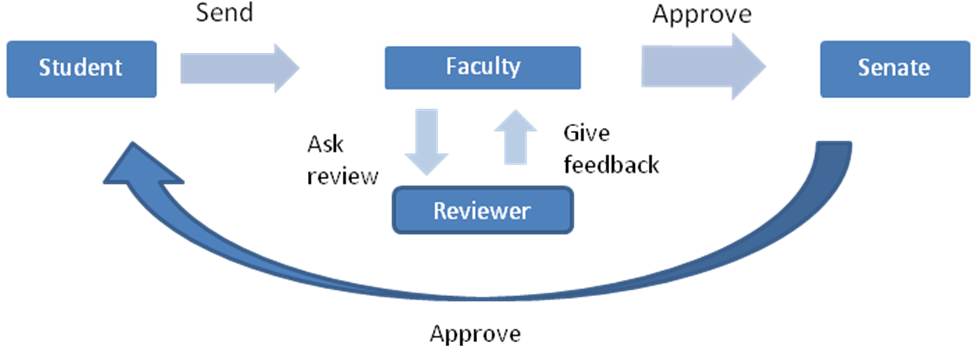
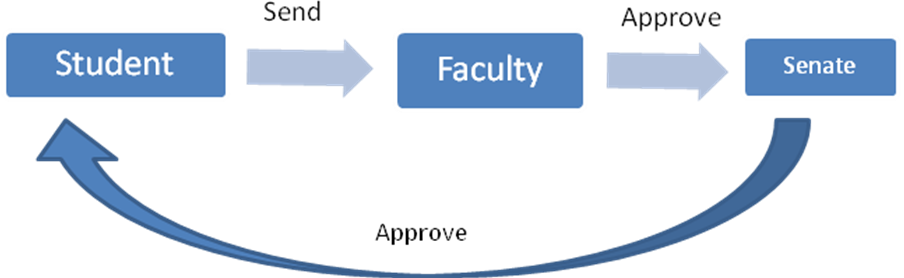
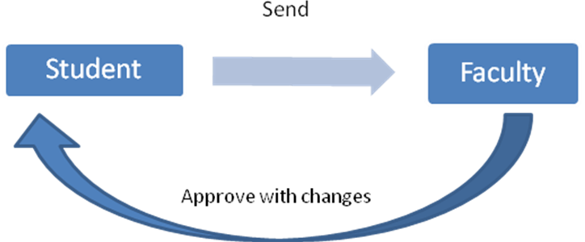
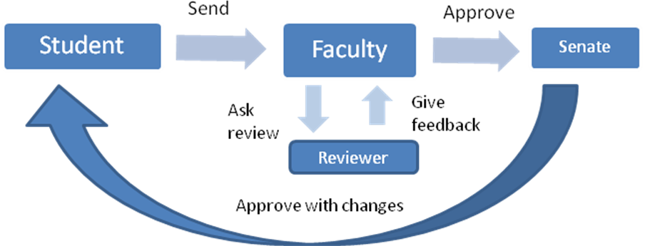

Above scenario, after student sent the thesis proposal, Faculty will ask Reviewer to review the thesis proposal and give a feedback to Faculty to review before approve the thesis proposal.

Others scenario, Faculty is not necessary ask review from Reviewer before approve, they also can approve the thesis proposal then submit to Senate for endorsement.

Approve with changes also can be done by the Faculty if the thesis proposal approve with changes. Status approve with changes is also not necessary need to be done by Senate endorsement.

Approve with changes also can through the others process which is Faculty has decide Reviewer give a feedback within the time frame given before Senate endorse. Remark or feedback also can be viewing by Senate roles before Senate endorse the thesis proposal Approve with changes
Created with the Personal Edition of HelpNDoc: Generate EPub eBooks with ease